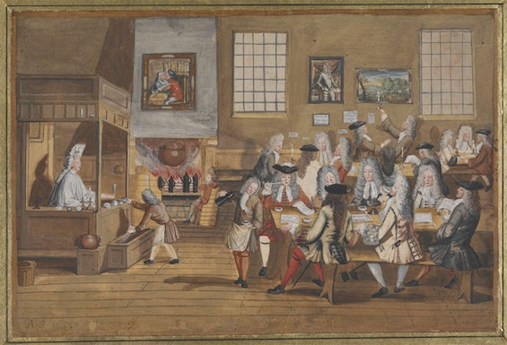
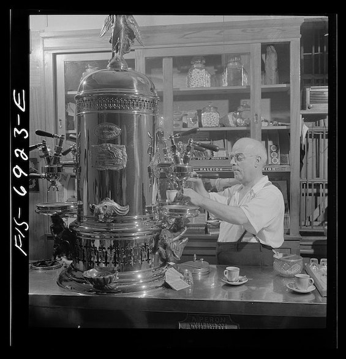

Її вважали винаходом Сатани, спалювали на площах, називали причиною чоловічої імпотенції. Але вона
перемогла та стала напоєм №1 у світі.
Слово «кава» – без перебільшення унікальне. Адже воно звучить плюс-мінус однаково майже всіма
мовами
світу. Винятки – лише мови Ефіопії (там це «буна» або «бун») та вірменська (відповідно «сурч»). За
різними версіями, слово пішло від арабського «вино»,
або «темний колір» або «не мати апетиту».
За легендою, почалося все з монаха Калді, який жив у Ефіопії в 9 столітті. Одного дня
чоловік помітив,
що кози, яких він пасе, їдять з кущів невідомі червоні ягоди, після
чого буквально танцюють – стільки в
них енергії. Вирішив спробувати ці диво-ягоди сам – і все
закрутилося. Ім’я Калді сьогодні носять
кав’ярні
та ростерії у всьому світі,
від Лос-Анджелеса до Токіо.
Десь посеред шляху до сучасності у кави з'явилися противники
- у містах виникають перші кав’ярні, де збираються чоловіки й не лише п’ють каву, а й спілкуються між собою. Владі це не завжди подобалося – особливо коли через посиденьки у кав’ярні чоловіки починали пропускати молитву в мечеті.
- ісламські богослови часто вважали, що гіркий чорний напій так само одурманює, як вино.
- у святій Мецці в 1511-му каву заборонили – влада відбирала зерна у продавців та спалювала на вулицях.
- в Османській імперії 16-17 століть напій теж кілька разів опинявся поза законом. У 1543 році вийшла фетва, згідно з якою каві надавався статус «харам» – тобто гріховного продуку, який не варто споживати правовірному.
- останнім, хто намагався боротися з кавою в Османській імперії, був султан Мурад IV у 1633-му. Його дратував не сам напій, а кав’ярні. Їхні відвідувачі любили гостро обговорювати державні справи – а навіщо правителю неконтрольовані збіговиська, в яких можуть зріти протестні настрої? До того ж завсідниками кав’ярень були яничари, які свого часу вбили дядька та брата султана.
Англійські кавові заклади мали одну особливість
Туди йшли не лише любителі потеревенити про політику та дізнатися новини, а й підприємці, щоб за кавою обговорити та підписати ділові угоди. Завбачливі власники часто мали запаси паперу, чорнил та гусячого пір’я. Брокери, яких через грубі манери не пускали на Королівську біржу, знайшли альтернативу – сусідні кав’ярні, насамперед Джонатана та Гарравея. В лондонській кав’ярні Едварда Ллойда, що відкрилася у 1688-му, укладали контракти на страхування суден. Так починалася історія знаменитого ринку страхування Lloyd’s of London, який існує донині. А ще в англійських кав’ярнях у ті часи можна було послухати лекцію або наукову дискусію, подивитися на дослідницький експеримент. Ісаак Н’ютон на столі в кав’ярні влаштував публічний розтин дельфіна. Оксфордські студенти часто обирали такі альтернативні заняття. І кав’ярні стали називали «університетами за пенні» – саме стільки коштували вхід до закладу та кава. Сьогодні в Сингапурі та Австралії є кав’ярні саме з такою назвою – Penny University.
Перша хвиля – це десь початок 20 століття, коли на Заході напій стає ще більш масовим. Кава з’являється на полицях звичайних магазинів – відповідно, її можна пити не лише у кав’ярні, а й вдома. Особливо цьому сприяла поява розчинної кави, яку набагато простіше готувати. Один із найпоширеніших та, можна сказати, базовий спосіб приготування кави у сучасних кав’ярнях – еспрессо, «спресований» з італійської. Вода проходить фільтр із кавою під тиском. Апарат для приготування такої кави розробили та поетапно вдосконалили кілька італійців наприкінці 19 – на початку 20 століть.
Для американських військових, які служили в Італії в роки Другої Світової, еспрессо був заміцний. Італійці почали подавати їм разом з експрессо ще чашку гарячої води. А потім хтось здогадався одразу розмішувати еспрессо з водою. Ну ви зрозуміли – так з’явився американо.
Натуральну каву пили рідше – або замовляли в хороших кав’ярнях на кшталт тієї ж Вірменки, або купували зерна. Які часто продавалися зеленими – тобто їх доводилося не лише молоти, а й самим обсмажувати. Хороша кава в СРСР була показником статусу та цінним подарунком. Її, як і інші дефіцитні товари, зазвичай не просто купували, а діставали та везли з відряджень. Співвідношення попиту й пропозиції описує тогочасний віршик: Кофе растворимый привезли на базу, привезли на базу – растворился сразу. Знайти пристойну каву легше було в столицях, портових містах та ближче до західного кордону – у балтійських республіках, Ужгороді або тому ж Львові.